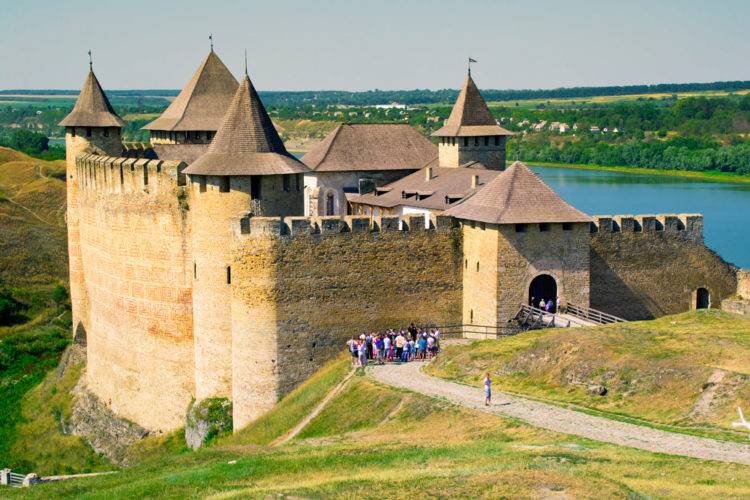

Достопримечательности Украины
В Украине присутствует аутентичная культура, прекрасные храмы и соборы, сохранившиеся через столетия древние замки и крепости, удивительная природа и теплый климат.
В этой статье рассмотрим некоторые из них :
- Киево-Печерская лавра (г. Киев)
- Площадь Независимости (г. Киев)
- Дерибасовская улица (г. Одесса)
- Хотинская крепость (Черновицкая область, г. Хотин)
- Собор Святой Софии (г. Киев)
1. Киево-Печерская лавра (г. Киев)

Одной из самых главных святынь православия, что сохранилась практически в первозданном виде еще с 11 века, по праву считается Киево-Печерская лавра – первый монастырь на Руси и символ веры. Над мощными водами Днепра, на его живописных склонах, сияя золотыми куполами, красуются величественные храмы. К ним ведут утопающие в зелени вымощенные булыжником дорожки, а внизу, в подземелье, извиваясь узким лабиринтом коридоров, расположились таинственные пещеры, где находится главное сокровище лавры – святые нетленные мощи праведников.
В списке «Достопримечательности Украины» Киево-Печерская лавра занимает первое место, являясь самой посещаемой туристами и паломниками со всего мира святыней. За тысячу лет своего существования лавра перенесла множество бедствий: землетрясения, нашествие монголо-татар, пожары и войны, но после каждого перенесенного потрясения и разрушения возрождалась.
Официальный сайт:
https://lavra.ua/
2. Площадь Независимости (г. Киев)

Площадь Независимости, именуемая украинцами «майдан», – главная площадь столицы. Это объект, который туристы и гости города посещают обязательно. Здесь любят побродить у фонтанов, сфотографироваться рядом с величественным монументом и просто погулять. К майдану примыкают несколько главных улиц Киева: Крещатик, Институтская, Софийская, Михайловская.
Площадь меняла свое название несколько раз: в XIX веке на месте ее расположения находилась пустошь с руинами оборонительных сооружений, затем первым наименованием стало Крещатинская, после – Думская площадь, и лишь в год обретения Украиной независимости (1991) она получила свое нынешнее название.
3. Дерибасовская улица (г. Одесса)

Одесса – южная жемчужина, гостеприимный город, у которого есть душа. Пропитанный солеными брызгами Черного моря и тонким одесским юмором, город поражает своим радушием и бесконечным очарованием. Туристические компании предлагают любые туры по стране, но посетить южную Пальмиру стоит обязательно.
Здесь определенно есть что посмотреть: великолепный Оперный театр, множество исторических памятников, хмурые катакомбы, маленькие улочки и уютные дворики старого города. Но есть в Одессе нечто особенное – Дерибасовская улица, воспетая в стихах и песнях, своего рода визитная карточка города. Здесь нет шумного транспорта, можно спокойно прогуляться по пешеходной мостовой, вымощенной брусчаткой, и с головой окунуться в непередаваемую атмосферу великого города. На Дерибасовской находится множество кафе, ресторанов, летних площадок, она просто насквозь пропитана одесским колоритом. Городской сад, памятник Утесову, уличные музыканты и художники, а рядом шикарный магазин «Пассаж», являющийся памятником архитектуры XIX века, притягивает взоры прогуливающихся гостей города. Здесь хочется улыбаться просто так, без повода, дышать полной грудью, потом купить на память какую-нибудь безделушку и влюбиться в этот город на всю жизнь.
4. Хотинская крепость (Черновицкая область, г. Хотин)

Достопримечательности Украины находятся в каждом уголочке этой уникальной страны. Хотинская крепость – одно из самых зрелищных мест, где нужно обязательно побывать любому туристу. Это настоящий памятник великой истории Руси, которому уже чуть более 1000 лет.
Изначально сооружение представляло собой небольшую крепость, построенную славянами из дерева. Ее функцией была защита местного народа от захватчиков. Когда монголо-татарское иго завоевало Русь, роль этого форта сильно возросла, он охранял важнейшую переправу на реке Днестр от набегов кочевников-грабителей. В дальнейшем здесь была построена первая небольшая каменная крепость. В течение времени ее расширяли и отстраивали заново после разрушения кочевниками. Вплоть до XIX века на этом месте постоянно проходили битвы. Принимала на себе Хотинская крепость и штурм российских войск.
Официальный сайт:
http://khotynska-fortecya.cv.ua
5. Собор Святой Софии (г. Киев)
Если вы не знаете, что посетить в Украине, то обязательно побывайте в Соборе Святой Софии, построенном по приказу Ярослава Мудрого в XI веке. Изначально сооружение состояло из 13 куполов, с течением времени добавилось еще 6. Храм часто разрушался из-за нападок грабителей-захватчиков, пережил натиск татаро-монгольского ига, отряд Батыя полностью разнес и разграбил собор. К началу XV века здание было сильно разрушено, службы для горожан прекратились. Митрополит Петр решил позвать итальянского архитектора, чтобы тот восстановил собор, в XVII веке. Сооружение теперь стало грушевидной формы, стены украшает лепнина, внутри восстановили иконы и фрески.
Сейчас Собор Святой Софии входит в список ЮНЕСКО (список Всемирного наследия), богослужения проводятся лишь по великим христианским праздникам, в остальное время храм открыт для посещения туристов. Здание очень красивое и уникальное. Один из куполов собора напоминает об Иисусе, остальные – об апостолах и евангелистах, проповедовавших Христа. В храме сохранена с XI столетия мозаика, украшающая центральный купол и арки. Сцены из Библии отражены не только на мозаике, но и на фресках. Всего на территории собора больше 100 захоронений, в том числе здесь покоятся Ярослав Мудрый и его семья.
Официальный сайт:
https://st-sophia.org.ua/